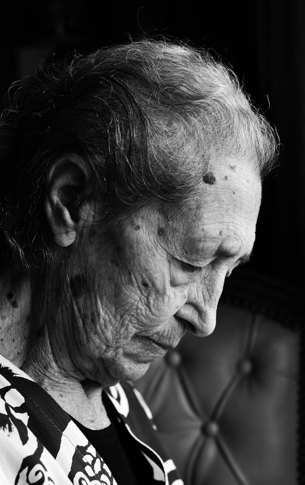
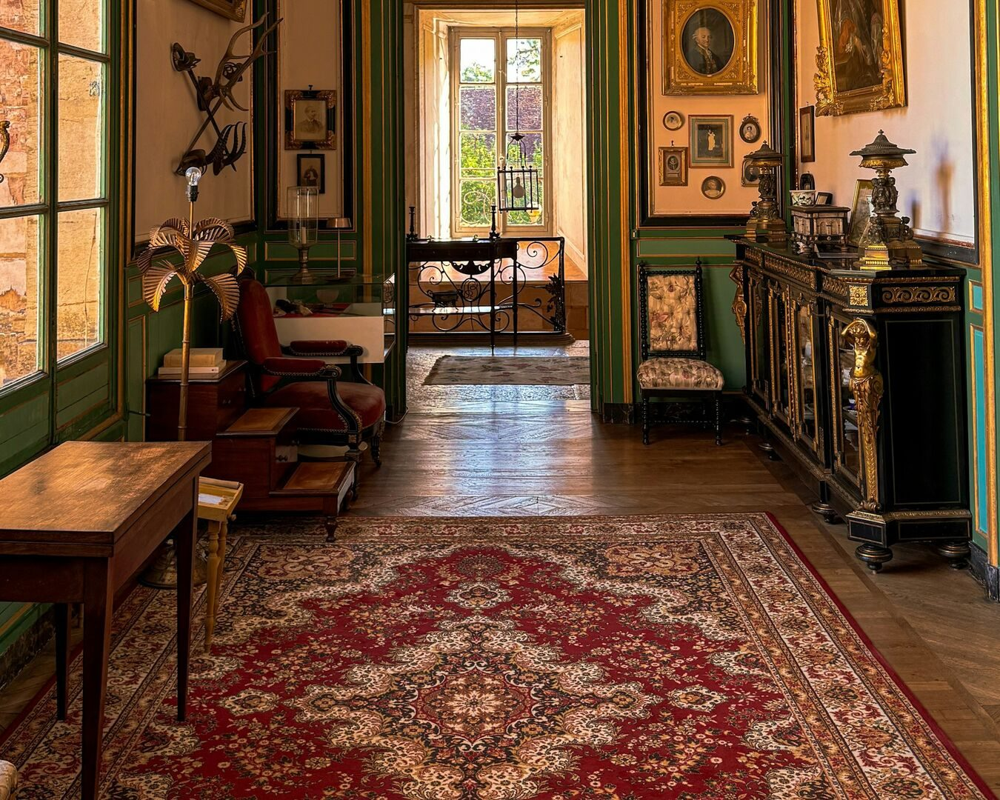
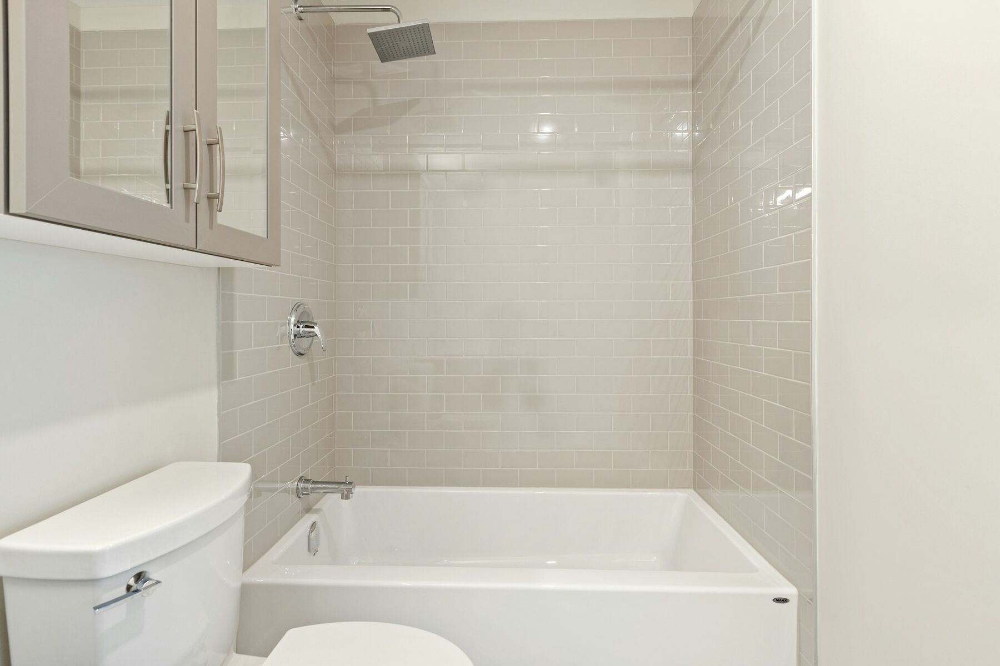
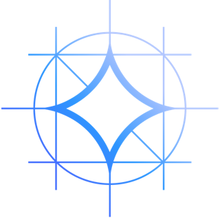

Ha 84 anni. È caduta di notte nel corridoio e si è rotta il femore. Tornerà con un deambulatore.
Nessuno ha mai visto la casa in cui torna.
La valutazione dei pericoli di caduta in casa, dalle foto del telefono, revisionata da un professionista prima della dimissione.
Il problema
Chi cade, e dove
ha ricevuto da un medico un consiglio su come evitarle.
La prevenzione funziona
L'esperto è il terapista occupazionale.
Revisione sistematica Cochrane 2023: 22 studi, 8.463 persone, evidenza di certezza alta.
Il collo di bottiglia
Terapisti occupazionali. Ogni quadrato = 1.000.
1 terapista ogni ~5.000 over 65.
La regola che manca
Se la valutazione del terapista non è disponibile, esaminate i pericoli della casa con il paziente e la famiglia.
Lo raccomanda il CDC a ogni dimissione. Step Wise lo rende possibile, con l'occhio dell'esperto.
Dal telefono, stanza per stanza: foto sovrapposte da più punti di vista. L'infermiera aggiunge il profilo di Maria: deambulatore, protesi d'anca, si alza di notte.
Jev risponde a domande atomiche sulle aree della Westmead Home Safety Assessment, lo strumento indicato dalle World Falls Guidelines. Un riquadro vale solo se la presenza è confermata; ciò che la foto non mostra resta "da verificare".


Foto: Thomas Würth e Point3D Commercial Imaging Ltd. / Unsplash. Riquadri a scopo dimostrativo.
VGGT è un transformer che guarda tutte le foto insieme. In un solo passaggio capisce da dove è stata scattata ognuna, quanto è lontano ogni pixel e dove sta nello spazio.
Ricostruzione reale prodotta dal prototipo: 4 foto di una stanza, 90.650 punti. Scala non ancora calibrata.
Gemma legge le prove e il profilo di Maria, mette i pericoli in ordine di urgenza e spiega perché. Ogni frase rimanda a una foto e a una fonte.

Gemma 4Google DeepMind · su AMD MI300XMaria usa un deambulatore: le ruote si impigliano nei bordi. Ed è sul percorso che fa di notte, dalla camera al bagno.
Prova: foto del corridoio · Fonte: CDC STEADICon la protesi d'anca deve scavalcare il bordo senza un appoggio.
Prova: foto del bagno · Fonte: CDC STEADIL'infermiera della dimissione vede ogni pericolo con la foto, la posizione nella stanza e il motivo. Approva, corregge, scarta. Minuti, non una visita.
Niente arriva alla famiglia senza la sua firma.
Azioni in ordine di priorità, in italiano semplice, con le fonti. Prima del rientro, non dopo la prossima caduta.
Il prototipo
Perché AMD
Foto di casa e dati clinici non possono finire su un cloud qualsiasi. I 192 GB di una MI300X contengono insieme la ricostruzione 3D e il modello che ragiona sul paziente: tutto dentro l'ospedale.
Preparazione e controlli di qualità.
FastAPI · Pillow · NumPyPose, profondità e punti 3D.
PyTorch · ROCmVerifica, priorità, piano.
vLLM · ROCmVenerdì Maria torna a casa.
Questa volta qualcuno ha guardato il corridoio.
Fonti